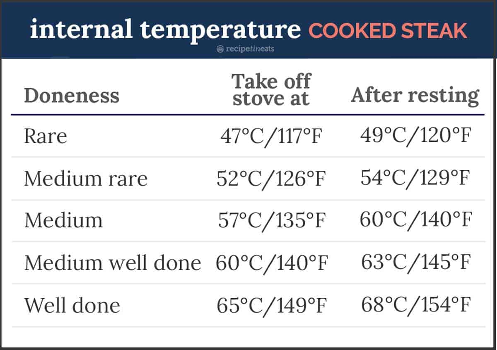

Steak
Steak

Description
For all you beef lovers! Wanna learn how to cook steak like
a true chef? Here's how!
Ingredients
- Thickish cut steak – no more than 2.5cm/1″ thick,
because we want to cook this entirely on the stove
(thicker cuts need to be finished in the oven).
Ideal steaks: boneless rib eye / scotch fillet,
porterhouse / New York, T-bone. Grade: takes high
quality steak over the top amazing, really elevates economical steak.
- Butter
- Garlic
- Fresh thyme
Steps
- Bring to room temp! This makes an amazing difference to cooking
through evenly rather than ending up with a thick
overcooked band in order for the very centre to be cooked
to your liking
- Pat dry and season the steak generously with salt and pepper
– this helps form that amazing crust we all know and love about
great steaks
- Get your skillet SMOKING HOT before putting the steak in
– again, for the crust
- WARNING: The butter will sputter when you add the thyme,
so stand back!
- Take the steak off the stove BEFORE your desired internal temperature
(see chart below) because the internal temperature will continue
to rise as it rests; and
- REST your steak for 5 to 10 minutes so it sucks its own juices
back in and the fibres relax. This is a must-do step for any
protein you cook hard and fast!
